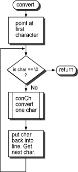

No. It does not call a subroutine
and so can leave the return address in $ra.
convert
After
reading in a line,
doLines calls
convert
to convert the entire line to upper case.
convert
calls conChar for each character in the line.
convert
needs a register to hold a character pointer that moves through the line.
It can't use a T register for this because it calls another subroutine.
So it uses an S register.
But it must restore the S register to its original state
when it returns to its caller.
This is the situation that calls for pushing an S register on the stack, using it in the subroutine body, and then popping it from the stack before returning to the caller.
 # convert -- convert a line to all capitals # # on entry: # $a0 -- address of input buffer # $a1 -- length of input buffer # # register use: # $s0 -- pointer into character buffer # # on exit: # no return values .text .globl convert convert: sub $sp,$sp,4 # push the return address sw $ra,($sp) # What should be done HERE?? # for ( p=buffer; *p!=0; p++ ) move $s0,$a0 # p=buffer cloop: lbu $a0,($s0) # get a char from the string beqz $a0,endC # exit if null byte # argument a0: char to convert jal conChar # convert character sb $v0,($s0) # put converted char into string addu $s0,$s0,1 # p++ b cloop endC: # And what should be done HERE?? lw $ra,($sp) # pop return address add $sp,$sp,4 jr $ra # return to caller
Fill in the missing code.